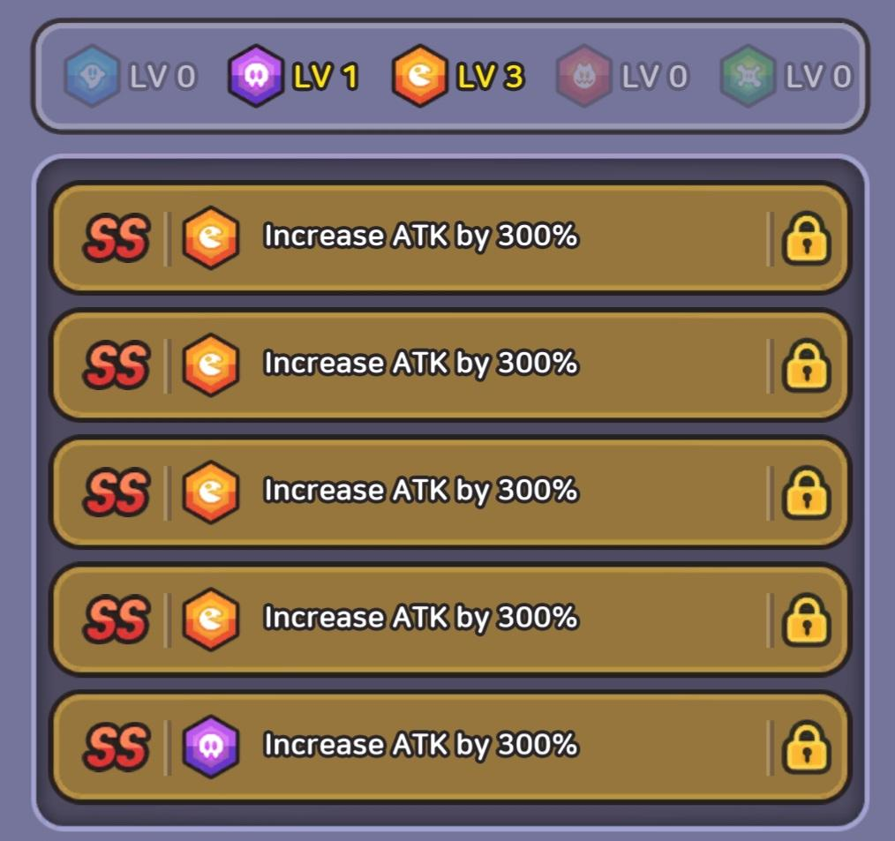
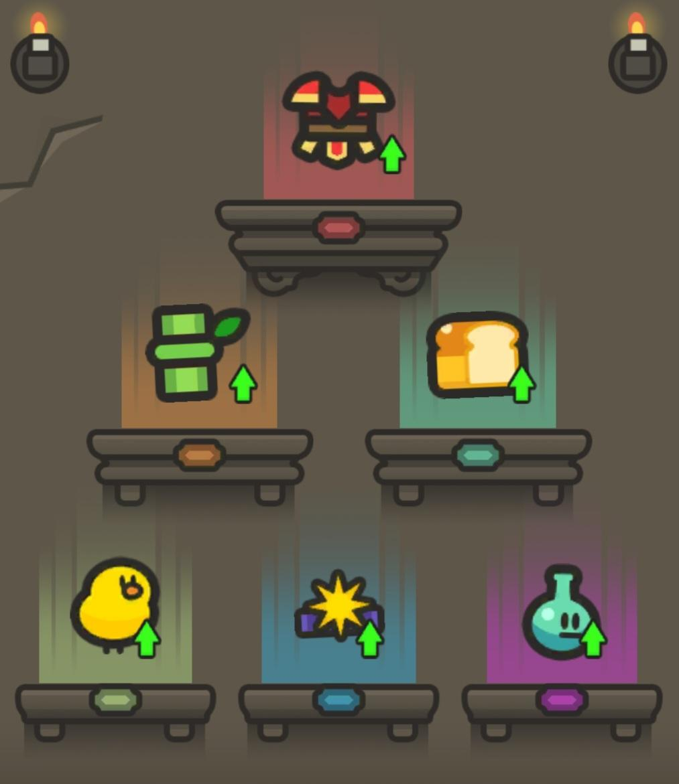

Best Build
Here you can find the best build for your slime. The best build is based not only on damage output but also on the synergy between companions, relics and treasures and how they benefit your slime. The best build makes sure that dungeons, bosses and events become a lot easier for you to take on.
Best Ring
The best ring to use is the Metal Ring with Companion Damage, Skill Damage and Critical Damage. These are the best stats your slime can get through rings and will definitely help you out with dungeons and bosses. When you're doing Slime Legion prioritize Companion Damage and only do the other stats Companion Damage is not in the selection.
Best Traits
The best traits to have are 4 orange slots and either 1 blue or purple slot with SS rarity and 300% Attack. These traits are the best way to maximaze your overall damage output. Re-rolling stats can be a pain so it's recommended to re-roll with all 5 slots unlocked and atleast 100A Trait points.
Best Companions
The best companions to use are 4 chickens and 1 frog, the rarity doens't matter much. These are the best companions to use because the best relics and treasures available right now are made for a Bird/Frog build. This build is also not so hard to make because you can get these companions pretty easily by summoning or doing the Dwarven King dungeon.
Best Relics
The best relics are Pottery, Ruby, Sparrow Figurine, Chicken Cushion, Sacred Necklace, Birdy Mask and Tome of Disorder. Pottery gives your chicken companions Egg Throw for extra damage. Ruby increases your companions' attack speed by a ton if you equip the Rage spell. The Sparrow Figurine increases the frequency of Egg Throw from the Pottery relic. The Chicken Cushion increases the Companion Damage of your chicken companions even more by enlarging them. Sacred Necklace increases your slime's HP for extra bulk so you can survive longer. The Birdy Mask increases your slime's Attack by a ton if you have 4 chicken companions, which is recommended for this build. Tome of Disorder increases the Attack of your slime by a lot to the point that it's night and day if it's equipped or not.
Best Treasures
The best treasures are Dwarf King Armor, Flexible Bamboo, Gold Bread, Chick Doll, Sun Crown and Frog Vase. Dwarf King Armor for extra Attack for your slime. Flexible Bamboo for exta HP for your slime. Gold Bread to increase your battle timer when you're up against bosses or when you are taking on dungeons. The chick doll increases your Skill Damage based on how many chicken companions you have in your party. The Sun Crown is straightforward, it just gives your slime extra Attack. The frog vase gives your slime extra Attack based on the amount of frog companions in your party hence why you need atleast 1 frog companion.
